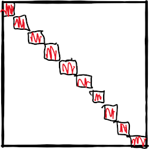

Linear Solver
Overview
As mentioned before, a linear solver is required to compute the Newton step in
dx .= jacobian(x)\f(x)Our package supports the following linear solvers:
cuSOLVERwithcsrlsvqr(GPU),Krylov.jlwithdqgmresandbicgstab(CPU/GPU),- UMFPACK through the default Julia
\operator (CPU), - generic BiCGSTAB implementation [Vorst1992] (CPU/GPU),
- or any linear solver wrapped in
LinearAlgebra.
Preconditioning
Using only an iterative solver leads to divergence and bad performance due to ill-conditioning of the Jacobian. This is a known phenomenon in power systems. That's why this package comes with a block Jacobi preconditioner that is tailored towards GPUs and is proven to work well with power flow problems.
The Jacobian is partitioned into a dense block diagonal structure using Metis.jl, where each block is inverted to build our preconditioner P.

Compared to incomplete Cholesky and incomplete LU this preconditioner is easily portable to the GPU if the number of blocks is high enough. ExaPF.jl uses the batch BLAS calls from cuBLAS to invert the single blocks.
CUDA.@sync pivot, info = CUDA.CUBLAS.getrf_batched!(blocks, true)
CUDA.@sync pivot, info, p.cuJs = CUDA.CUBLAS.getri_batched(blocks, pivot)Assuming that other vendors will provide such batched BLAS APIs, this code is portable to other GPU architectures.
- Vorst1992Vorst, H. A. van der. 1992. “Bi-Cgstab: A Fast and Smoothly Converging Variant of Bi-Cg for the Solution of Nonsymmetric Linear Systems.”SIAM Journal on Scientific and Statistical Computing 13 (2): 631–44